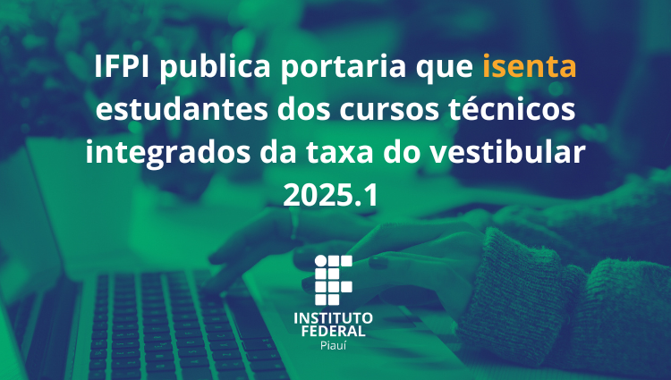
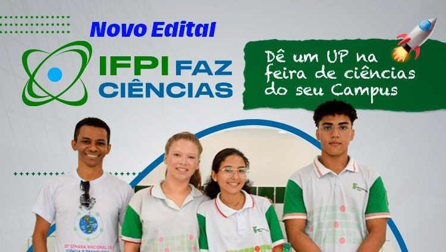
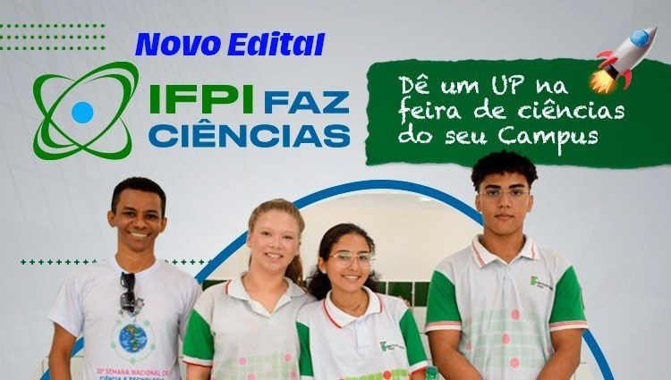
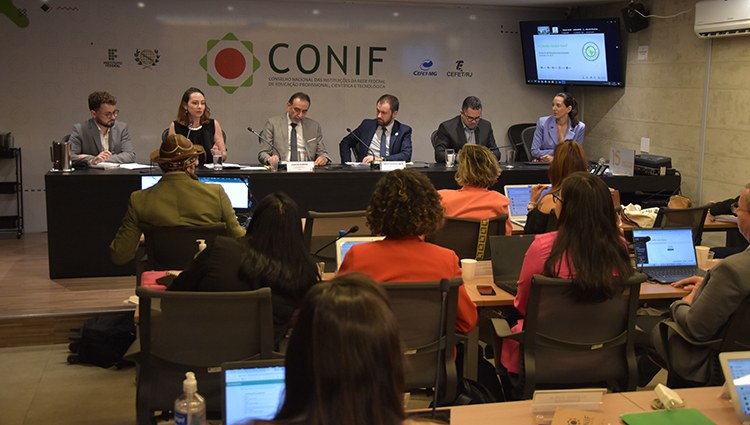

Destaque
Mais Vídeos->
IFPI publica portaria que isenta estudantes dos cursos técnicos integrados da taxa do vestibular
O Instituto Federal do Piauí (IFPI) prorroga até 20 de setembro as inscrições para 500 vagas em cursos da modalidade de Educação de Jovens e Adultos (PROEJA), oferecidos a quem já tenha concluído ou esteja concluindo o Ensino Fundamental (ou equivalente) no ano letivo de 2024. Nos cursos do PROEJA, o estudante concluirá, em até três anos, simultaneamente, uma habilitação profissional técnica e o ensino médio. Os aprovados receberão bolsas de até 240 reais mensais, durante o curso.
As vagas estão divididas para os seguintes campi: Angical, Campo Maior, Cocal, Corrente, José de Freitas, Oeiras, Parnaíba, Paulistana, Pedro II, Picos, Pio IX, Piripiri, São João do Piauí, São Raimundo Nonato, Teresina Central, Teresina Dirceu, Uruçuí e Valença. As inscrições devem ser feitas de forma presencial no campus do curso escolhido.Este curso é voltado para profissionais do IFPI, servidores da Secretaria de Estado da Educação (SEDUC-PI) e parceiros municipais, e tem como objetivo oferecer uma capacitação que une educação profissional e básica, contribuindo para o desenvolvimento das competências necessárias no mercado de trabalho.
Prorrogadas inscrições para IF Piauí faz Ciências 2024
O Instituto Federal do Piauí, através da Pró-reitoria de Pesquisa, Pós-graduação e Inovação (PROPI), prorroga até 13 de setembro as inscrições para o edital IF Piauí faz Ciências 2024.
Esse edital tem como finalidade destinar apoio financeiro para a realização de eventos acadêmicos de divulgação e popularização da ciência, enquadrados na modalidade “Feira de Ciências”, que deverão ser presenciais e gratuitos. Além da comunidade acadêmica do campus de execução, as Feiras de Ciências deverão ser abertas à comunidade e contar com a participação de estudantes e servidores de escolas municipais e estaduais.
Os eventos deverão ser realizados durante o ano de 2024 em cidades que possuam campus do IFPI, distribuídos nos 12 territórios de desenvolvimento do Piauí, apresentando para a comunidade, além de trabalhos acadêmicos escolares relacionados aos conteúdos das disciplinas, soluções relacionadas às potencialidades e aos arranjos produtivos locais (APLs).Além disso, devem apresentar comprovante de residência e documentos complementares que comprovem ter agravantes sociais, ou seja, situações que façam com que o aluno tenha gastos adicionais como: a compra de medicamentos contínuos, gasto com transporte, pagamento de aluguel etc.
- É importante lembrar que os Benefícios como o Bolsa Família não são contabilizados como renda. E que este deve ser apresentado nos documentos complementares. E que aquelas pessoas que, mesmo não tendo renda fixa, devem declarar o rendimento obtido ao longo do mês através das declarações disponíveis no edital.
A Diretoria de Extensão do Campus Teresina Central, por meio da Coordenação de Assistência Estudantil e Educação Inclusiva e da Comissão Local de Assistência Estudantil, prorroga até o dia 19 de setembro o prazo para interposição de recurso sobre o resultado preliminar do Processo de Reavaliação do Benefício Permanente (POLAE/PAEVS).
Conif lança edital do Programa Cidadão Global em parceria com instituições colombianas
O Instituto Federal do Piauí, através da Pró-reitoria de Pesquisa, Pós-graduação e Inovação (PROPI), prorroga até 13 de setembro as inscrições para o edital IF Piauí faz Ciências 2024. Esse edital tem como finalidade destinar apoio financeiro para a realização de eventos acadêmicos de divulgação e popularização da ciência, enquadrados na modalidade “Feira de Ciências”, que deverão ser presenciais e gratuitos. Além da comunidade acadêmica do campus de execução, as Feiras de Ciências deverão ser abertas à comunidade e contar com a participação de estudantes e servidores de escolas municipais e estaduais.
Os eventos deverão ser realizados durante o ano de 2024 em cidades que possuam campus do IFPI, distribuídos nos 12 territórios de desenvolvimento do Piauí, apresentando para a comunidade, além de trabalhos acadêmicos escolares relacionados aos conteúdos das disciplinas, soluções relacionadas às potencialidades e aos arranjos produtivos locais (APLs).Além disso, devem apresentar comprovante de residência e documentos complementares que comprovem ter agravantes sociais, ou seja, situações que façam com que o aluno tenha gastos adicionais como: a compra de medicamentos contínuos, gasto com transporte, pagamento de aluguel etc. - É importante lembrar que os Benefícios como o Bolsa Família não são contabilizados como renda. E que este deve ser apresentado nos documentos complementares. E que aquelas pessoas que, mesmo não tendo renda fixa, devem declarar o rendimento obtido ao longo do mês através das declarações disponíveis no edital.
A Diretoria de Extensão do Campus Teresina Central, por meio da Coordenação de Assistência Estudantil e Educação Inclusiva e da Comissão Local de Assistência Estudantil, prorroga até o dia 19 de setembro o prazo para interposição de recurso sobre o resultado preliminar do Processo de Reavaliação do Benefício Permanente (POLAE/PAEVS).
Em comemoração aos seus 15 anos, o Conselho Nacional das Instituições da Rede Federal de Educação Profissional, Científica e Tecnológica (Conif) está oferecendo uma oportunidade inédita para estudantes das instituições associadas ao colegiado que desejam adquirir conhecimentos no exterior.
Nesta quarta-feira, 11, durante a 137ª Reunião Ordinária do Conif, foi lançado o edital do Programa Cidadão Global - Conif, que terá a Colômbia como destino. Os estudantes selecionados terão a oportunidade de realizar atividades de Iniciação Científica e Desenvolvimento Tecnológico e Inovação por 90 dias. Ao todo, cinco estudantes – um de cada região do país – serão contemplados com a bolsa, sendo três de Nível Técnico e dois que estejam cursando a Graduação. A seleção será feita por meio de sorteio.
O Campus Uruçuí publicou edital de chamada pública para aquisição de gêneros alimentícios diretamente da Agricultura Familiar e do Empreendedor Familiar Rural. O processo atende ao Programa Nacional de Alimentação
Notícias
-
Teresina Zona Sul sediará evento“Setembro Azul e Verde: Juntos pela Inclusão e Visibilidade Social"
Uruçuí faz chamada para aquisição de alimentos
Picos faz chamada para aquisição de alimentos
Alunos do Campus Paulistana representam o curso de Química em evento no Pará
Angical divulga preliminar de chamada para aquisição de alimentos
Campus Angical conclui projeto de extensão Robótica Inclusiva
Abertas inscrições para Jogos Intercampi do IFPI
IFPI é o primeiro Instituto Federal do Brasil a licitar os novos
Contatos/Localização
| Nome | Reponsável | Número | Localização | |
|---|---|---|---|---|
| Reitoria | Paulo Borges da Cunha | (86) 3131-1404 | reitoria@ifpi.edu.br | Prédio principal |
| Campus Teresina Central | Paulo de Tarso Vilarinho Castelo Branco | (86) 3131-9402 | teresina.central@ifpi.edu.br | Teresina Centro |
| Campus Teresina Zona Sul | Germano Lúcio Pereira Moura | (86) 3131-4850 | gabinetectzsul@ifpi.edu.br | Teresina Zona Sul |
| Campus Parnaíba | Luis Fernando dos Santos Souza | (86) 3315-6901 | dg.capar@ifpi.edu.br | Parnaíba |
História do Instituto federal do Piauí
O Instituto Federal do Piauí (IFPI) faz parte da Rede Federal de Educação Profissional, Científica e Tecnológica do Brasil, uma rede de instituições públicas de ensino que se espalha por todo o país. Sua história remonta à criação das primeiras escolas de educação técnica no Brasil.
Fundação e Expansão
O IFPI foi originado a partir da Escola Técnica Federal do Piauí, criada em 23 de setembro de 1909, quando foi instituída a Escola de Aprendizes Artífices. O objetivo inicial dessas escolas era oferecer formação profissional básica para a população, com foco em ofícios manuais. Com o tempo, essas instituições evoluíram para se tornarem centros de excelência em educação técnica e tecnológica. Em 1965, a Escola de Aprendizes Artífices se transformou em Escola Industrial Federal, e, mais tarde, em 1979, foi renomeada como Escola Técnica Federal do Piauí. Essa mudança marcou um período de expansão e modernização do ensino oferecido, com cursos técnicos em diversas áreas.
Institucionalização do IFPI
Em 29 de dezembro de 2008, com a criação dos Institutos Federais pela Lei nº 11.892, a Escola Técnica Federal do Piauí foi transformada no Instituto Federal do Piauí (IFPI). Com essa transformação, o IFPI passou a ter autonomia para oferecer não apenas cursos técnicos, mas também cursos de nível superior, pós-graduação e programas de pesquisa e extensão, ampliando significativamente seu alcance e impacto social.
Missão e Objetivos
O IFPI tem como missão promover a educação profissional e tecnológica de excelência, integrando ensino, pesquisa e extensão para o desenvolvimento socioeconômico do Piauí e do Brasil. Seus objetivos incluem a formação de cidadãos críticos e capacitados, a promoção de inovação tecnológica, e o atendimento das demandas locais e regionais por mão de obra qualificada.
Estrutura Atual
Atualmente, o IFPI possui vários campi distribuídos por diversas cidades do estado do Piauí, como Teresina, Parnaíba, Picos, Floriano, entre outras. Oferece cursos técnicos, tecnológicos, de graduação e pós-graduação em diferentes áreas, como engenharia, saúde, administração, informática, entre outros. O IFPI é uma instituição de referência na educação profissional e tecnológica no estado do Piauí, desempenhando um papel crucial na formação de profissionais capacitados e na promoção do desenvolvimento regional.